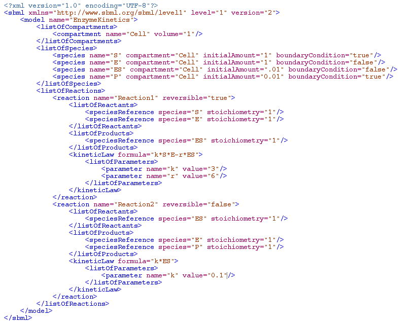

SBMLNDSolve
SBMLNDSolve[model, tmax, options] evaluates NDSolve on an SBML model, where model is the ouptput of SBMLRead, tmax is the duration of the NDSolve run, and options are any valid options for NDSolve.
Additional Notes and Limitations:
- Units are ignored by SBMLNDSolve.
- Events are not currently processed by SBMLNDSolve. It is anticipated that this functionality will be added in a later version of SBMLNDSolve.
- The inclusion of algebraic constraints (rules) along with differential equations to produce a system of Differential-Algebraic Equations requires Mathematica Version >+ 5.0; version checking is performed dynamically, and a message will be printed if your model has a DAE but you are working with an earlier version of Mathematica.
Example
The following example illustrates the use of SBMLNDSolve to solve a model after it is read by SBMLRead, and then the use of SBMLPlot to plot the model after the numerical solution is computed.
Here is the model:
{kind=link}
Click on xml to view larger image
Here is the solution and plot: